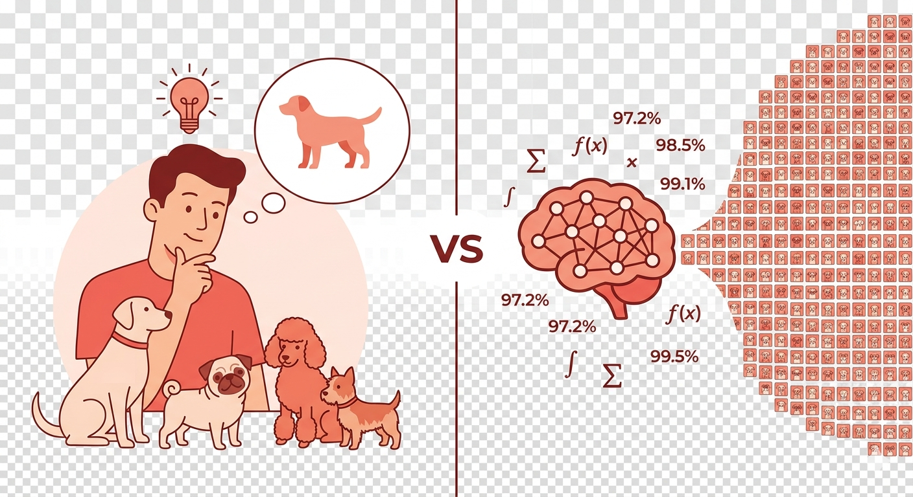
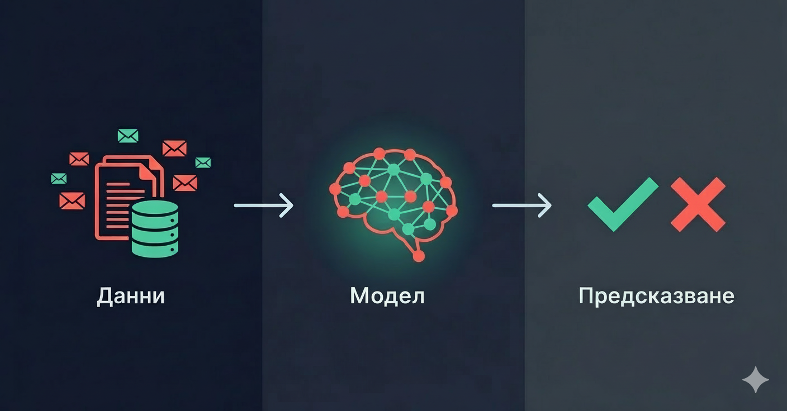
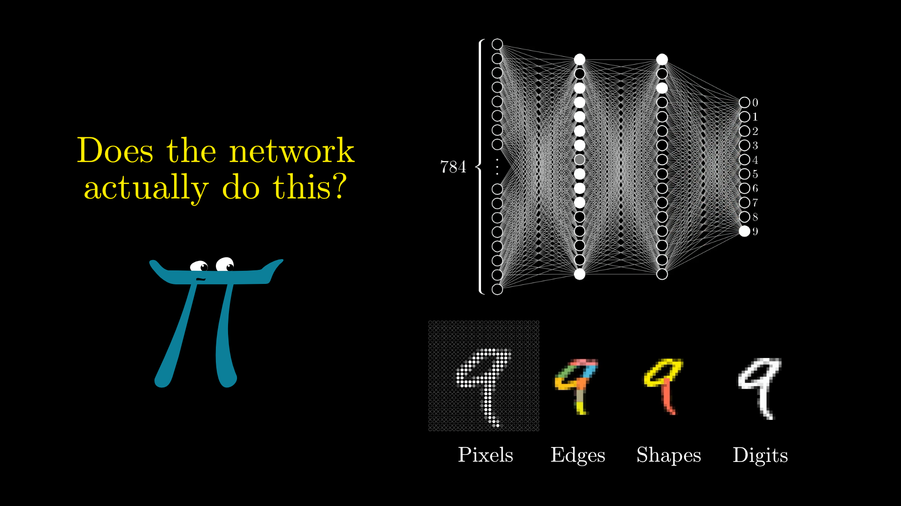
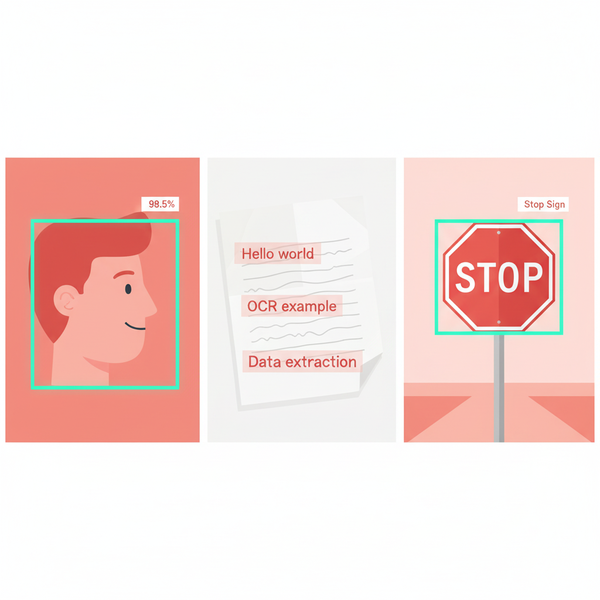

Какво е ИИ, как работи и какви са основните му технологии
Способността на компютърна система да изпълнява задачи, които обикновено изискват човешки интелект — разпознаване на образи, разбиране на език, вземане на решения.

Защо ИИ избухна точно сега, а не преди 20 години?
Алгоритмите бяха готови — липсваха данните и хардуерът, за да заработят на мащаб.
Вместо да пишем правила, даваме примери. Компютърът сам намира закономерностите.

Машинното обучение прави точно същото — но с данни вместо очи.

Какво стои зад ChatGPT, Gemini, Claude?
ИИ, който „вижда" — анализира изображения и видео

ИИ, който „чете" и „пише"
Какво се промени през 2025–2026
Система, която разпознава ръкописен текст от сканирана доставна бележка. Коя технология стои зад нея?
Познаването на ИИ ви дава повече контрол — не по-малко.